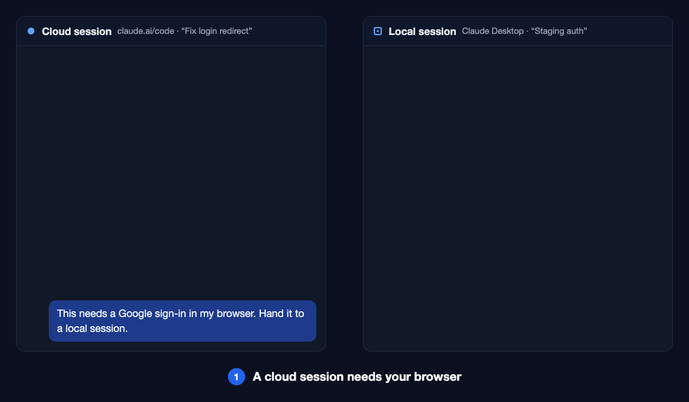

The problem
Cloud sessions can't reach your machine.
So some steps just stop.
Your browser
No tabs. No cookies.
OAuth sign-in
Can't log in for you.
Local files
Out of reach.
Desktop apps
Not installed there.
How it works
Three steps. No copy-paste.
You never type a session id.
Ask in the cloud
Say what needs your machine.
Your computer does it
Pick a local session, or start a new one.
Result comes back
To the same cloud session. Work continues.
See it
One sign-in, round trip.
Cloud asks. Local signs in. Cloud gets the result.

Inside the plugin
Three skills. One install.
They load on their own when you need them.
Hand off to your computer
Send a step down. Get the answer back.
Run tasks in parallel
One session per task. You talk to one.
Track it on a live board
Tasks, order and blockers at a glance.
Install
Add it once. Works everywhere.
Cloud and local sessions on the same account both get it.
- Open Customize → Plugins on claude.ai or in Claude Desktop.
- Find Cloud Local Bridge under Discover. Choose Add.
- Start a new session. Done.
> /plugin install cloud-local-bridge --marketplace ShiJianXi/cloud-local-bridge
This way only reaches that one machine. Not in Discover yet? Choose Add → Add marketplace and enter ShiJianXi/cloud-local-bridge.
FAQ
Quick answers.
How do I do an OAuth sign-in from Claude Code on the web?
Install the plugin. Ask the cloud session to hand the sign-in to your computer. A local Claude session opens your browser, signs in, and sends the result back.
Why does SendMessage say "No agent named 'session_…' is reachable"?
A local session can't reach a cloud session by its session_ id. Only the cloud session's title works. The plugin makes both sides use the title.
Which local sessions work?
Claude Desktop, or a terminal session started with claude remote-control. It must be open and on the same claude.ai account.
Can the cloud session start a local session for me?
Yes. Keep claude remote-control --spawn worktree running on your computer. Each new session gets its own git worktree.
Does it collect any data?
No. No servers, no network calls, nothing stored. It's instructions for Claude. Messages move between your own sessions.
Is it free?
Yes. Free and open source, MIT license.
Give your cloud session a pair of hands.
Free. One minute to install.